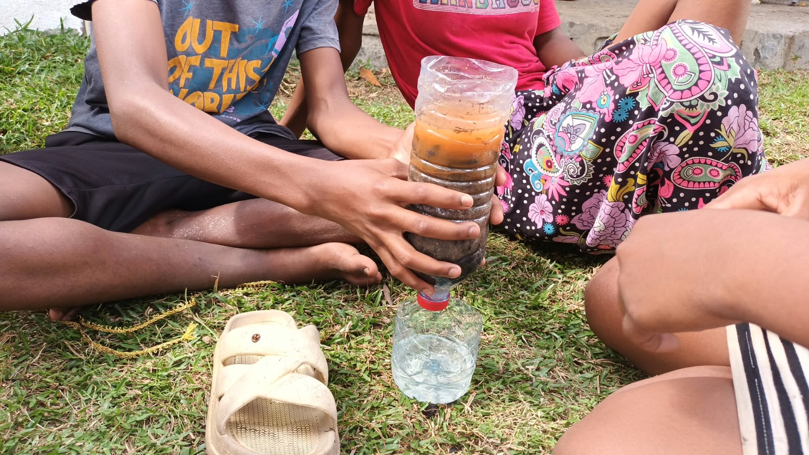
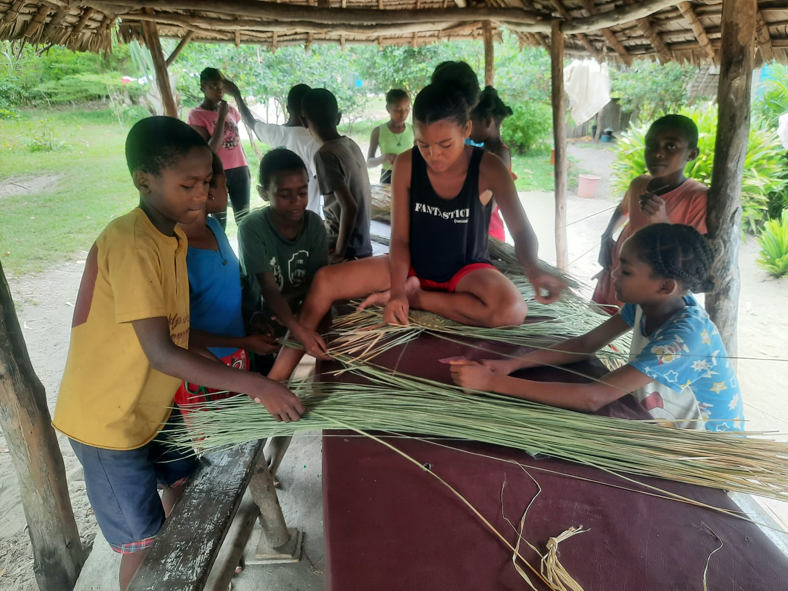
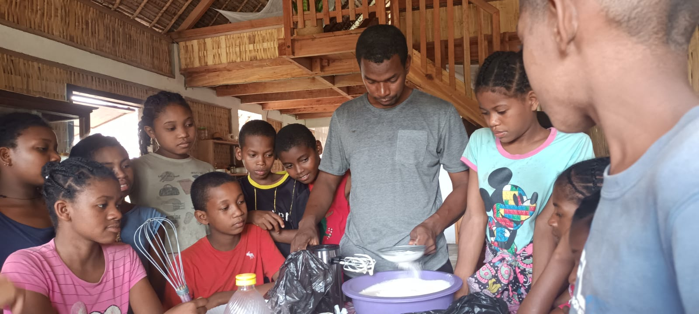

Clean water
Hands-on learning about simple filtration, safe water and caring for community health.
Literacy and English classes, kids ministry, sport, coding and music. Each programme meets people where they are.
Sekoly Mizara Fiainana (SMF) combines literacy, life skills and relationship-based teaching in Mahambo, Belobaka, Mandrosoarivo and Andekaleka.
English lessons help children, young people and adults communicate confidently and access new opportunities across our communities.
Bible teaching, games, encouragement and school visits create welcoming spaces where children can learn, belong and grow.
Football and basketball build teamwork, discipline, confidence and leadership in Belobaka and Mahambo.
Laptop-based coding, computer training, electronics and identity sessions equip young people for a changing world.
Practical sessions help young people apply knowledge, create with their hands and develop skills that support healthy and productive lives.

Hands-on learning about simple filtration, safe water and caring for community health.

Young people learn patience, creativity and practical techniques using local materials.

From preparation to decoration, pastry sessions turn teamwork and creativity into a practical skill with income potential.
Regular Bible reading nurtures faith, reflection and a growing confidence in God’s Word.
Keyboard and guitar sessions in Belobaka nurture creativity, discipline and shared worship.
Choirs and serving teams visit communities such as La Refuge and join outreach with DTS Kona.
Relief distribution and Bible outreach bring practical care, encouragement and the Gospel into communities.
See every photo from each programme in the gallery.